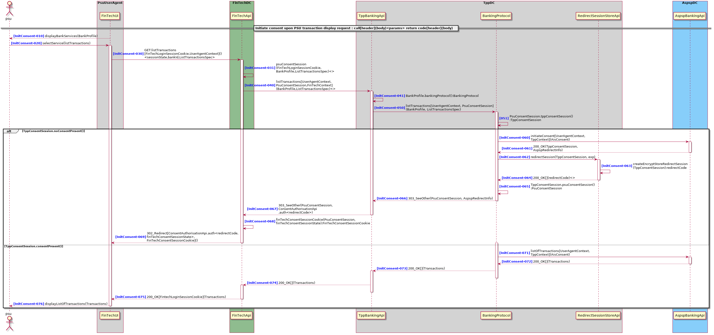

List Of Transactions
General terms defined in the dictionary
Definition
Request the list of transactions for a given bank account. Initiates a consent request if necessary. Generally the consent request is not explicitly initiated by the PSU. When the PSU requests for a banking service, if the FinTech has an existing consent that covers the service, no new consent will be initiated.
Diagram

Use Cases
InitConsent-010 FinTechUI.displayBankServices
The result of a bank selection is that the FinTechUI displays the BankProfile to the PSU. The bank profile also contains the list of services offered by the selected bank.
InitConsent-020 : FinTechUI.selectService(listTransactions)
The FinTechUI will forward the service selected to the FinTechApi. In this case listTransactions. The selection might be accompanied with some service specifications. For example in the case of listTransactions, this can be the iban of the target account. We will call this ListTransactionsSpec.
InitConsent-030 : FinTechApi.listTransactions
The FinTechUI issued a listTransactions request to the FinTechAPI with following information attached:
FinTechLoginSessionCookie:
Used to maintain session between PSU and FinTech.
sessionState
Used to read FinTechLoginSessionCookie. Passed as a path param.
UserAgentContext
Describes details associated with the user agent of the PSU. Generally not visible in the API as they are automatically provided by the user agent. The purpose is to transfer context specific information on the PsuUserAgent and the request that might later be required by the ASPSP like: * IP-Address, * IP-Port, * Accept, * Accept-Charset, * Accept-Encoding, * Accept-Language, * Device-ID, * User-Agent, * PSU-Geo-Location, * Http-Method.
The bank-id
Passed as a query parameter and referencing the given BankProfile contains meta information associated with the selected Bank.
The account-id
Sent as a query parameter and referencing the target bank account.
The ListTransactionsSpec
Specifies details of the service requested by the PSU. These are all query parameter associated with the request like: * dateFrom: Starting date (inclusive the date dateFrom) of the transaction list, mandated if no delta access is required. * dateTo: End date (inclusive the data dateTo) of the transaction list, default is "now" if not given. * deltaList: This data attribute is indicating that the AISP is in favor to get all transactions after the last report access for this PSU on the addressed account. * entryReferenceFrom: This data attribute is indicating that the AISP is in favor to get all transactions after the transaction with identification entryReferenceFrom alternatively to the above defined period. * bookingStatus: interested booking status.
InitConsent-031 : FinTechApi.loadPsuConsentSession
A PsuConsentSession is a reusable token, that can be used to request service with the TppBankingApi. It is a reference to the PSU in the world of the TPP. Whether a service request is covered by an existing PsuConsent is decided by the TppBankingApi. The Task of the FinTechApi is to load any existing PsuConsentSession and associate it with the PSU request to the TPP.
InitConsent-040 : TppBankingApi.listTransactions
Forward of the PSU request to TPP with following associated context informations:
FinTechContext
contains identification information associated with the FinTech.
PsuConsentSession
See InitConsent-031
UserAgentContext
Same as in InitConsent-030
The account-id
Same as in InitConsent-030
The bank-id
Same as in InitConsent-030
ListTransactionsSpec
Same as in InitConsent-030
InitConsent-041 TppBankingApi.loadBankingProtocol
TppBankingApi selects the BankingProtocol based on the given BankProfile.
InitConsent-050 : BankingProtocol.listTransactions
The BankingProtocol associated with the given BankProfile decides on how to proceed with the request after loading and analyzing an eventually stored TppConsentSession.
InitConsent-051 : BankingProtocol.loadTppConsentSession
- If there is existing consent associated with the PSU for the given service, the BankingProtocol will load the corresponding TppConsentSession. Information needed to load the TppConsentSession is contained in the given PsuConsentSession.
- Use the loaded TppConsentSession to retrieve an existing consent and proceed to the ASPSP with the service request.
No Suitable Consent Present
InitConsent-060 : Initiating a Consent with the ASPSP
If there is no suitable consent available, the BankingProtocol will first proceed with a consent initiation request. This is, an initiated service request will either ends up in the expected service response or first redirect the PSU to the ConsentAuthorisationApi. Whether this operation is necessary or not depends on the AspspBankingApi interface. The selected banking protocol will know how to deal with this.
UserAgentContext
See UserAgentContext
TppContext
The Associated TppContext contains Tpp identifying information.
AisConsent
The AisConsent object contains information associated with the service request.
InitConsent-061 : ConsentInit Response
The response of the consent init request depends on the ASPSP implementation. It generally provides information needed to collect PSU identification information in the embedded case or information needed to redirect the PSU to the OnlineBankingApi. The result of a consent init session also carries an TppConsentSession, containing all information needed to be stored by the Tpp for the reference of the started consent session.
InitConsent-062 : BankingProtocol calls RedirectSessionStoreApi for a redirectCode
InitConsent-063 : RedirectSessionStoreApi
The RedirectSessionStoreApi will encrypt and store the redirect session, indexing it with a redirectCode that can be used upon redirection by the ConsentAuthorisationApi to retrieve the corresponding TppConsentSession.
InitConsent-063a : Encryption
Encryption is performed to prevent unlawfull use of contained information in the Tpp's backend environment during the redirect session.
InitConsent-063b : Storage an Expiration
Encrypted TppConsentSession shall only be stored for the duration of the redirect session.
InitConsent-063c : Auto Cleanup
Auto Cleanup process will make sure all expired redirect sessions are removed from that storage.
InitConsent-064 : RedirectSessionStoreApi returns redirectCode to BankingProtocol
The redirectCode is a one time string that contains information used to retrieve redirectInfo from the TPP Server in a back channel. The redirectCode is short lived (like 10 seconds). This is, TPP server does not need to hold the record indexed by this redirectCode for more than the given expiration time. Record must also be deleted by the TPP on first retrieval by the ConsentAPI.
InitConsent-065 : BankingProtocol reproduces PsuConsentSession from the TppConsentSession
InitConsent-066 : Resulting Redirect Information is returned to the TppBankingApi
The attached AspspRedirectInfo contains all information necessary to redirect the PSU to the ConsentAuthorisationApi.
InitConsent-067 : TppBankingApi returns the PsuConsentSession an a redirectCode to FinTechApi
InitConsent-068 : FinTechConsentSessionCookie
Available in the request header. This cookie shall be set for the Max time given to the PSU for the authorization of the corresponding consent. The cookie can be bound to the end point FinTechApi.consentAuthDone so it does no need to be transported to the server on other requests.
InitConsent-068a : finTechConsentSessionState
Will be used to read and validate the corresponding FinTechConsentSessionCookie.
InitConsent-069 : FinTechApi redirects userAgent to the ConsentAuthorisationApi
- PsuUserAgent redirection happens using a HTTP_302
- redirectCode is attached as a query parameter
- produced FinTechLoginSessionCookie is returned as a cookie to the PsuUserAgent
InitConsent-070 : Suitable Consent Present
InitConsent-071 : Forward Service Request to ASPSP
Service request is forwarded to the AspspBankingApi together with a reference to the consent. The Associated TppContext contains Tpp identifying information.